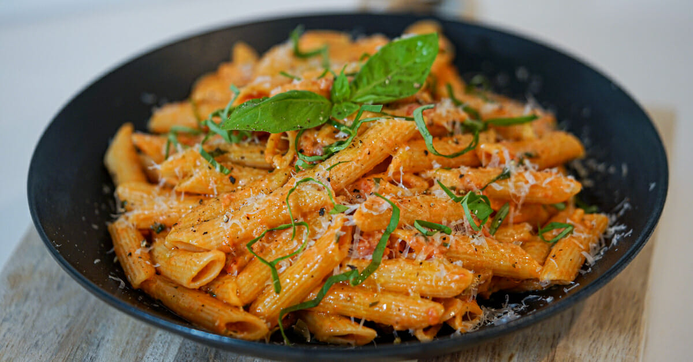

Butter sauce

Great pasta to have with the girlfriend.
Ingredient List
- 4 cloves of garlic
- Half an onion
- 600g of tomato (1 1/2 cans)
- 35% cooking cream
- 1 tbsp of sugar
- 4 basil stems
- Parmisiano regiano
- Lots of basil
- Thyme
- Pasta of your choice
Instructions
-
Add your pasta to boiling water that has been salted and cook for
alloted cooking time
-
Chop garlic and dice onions and cook in a pan at medium heat until the
onions get some browning on them
-
Add the tomato, basil stems, sugar and thyme and simmer for 5 minutes
- Add the heavy cream and simmer for 5 min
- Take out the basil stems and thyme, season with salt and pepper
- Put pasta in sauce with some pasta water